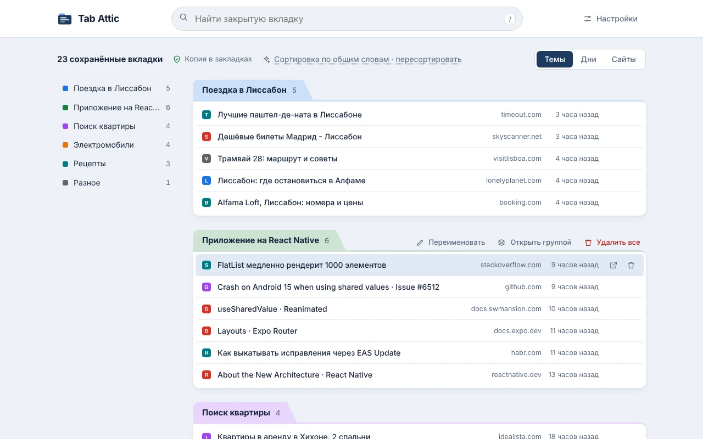
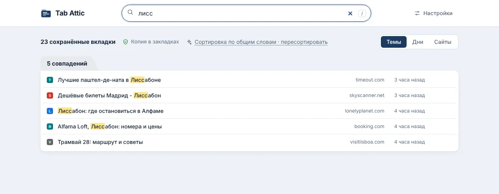
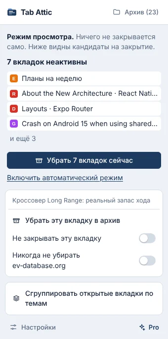

Любая закрытая вкладка находится сразу
Наберите пару букв из заголовка, сайта или темы на любом языке. Откройте одну вкладку или целую тему группой вкладок Chrome.
Tab Attic сначала сохраняет неиспользуемые вкладки и только потом закрывает их. Каждая остаётся в поиске и в своей теме. Копия хранится в закладках Chrome.

Вкладки копятся из страха их потерять. Tab Attic убирает этот риск.
Через 3 часа активного времени без просмотра вкладку пора убрать. Ночи, выходные и закрытый браузер не считаются.
Копия попадает в Tab Attic и в закладки Chrome. Только после этого вкладка закрывается.
Встроенная модель Chrome раскладывает вкладки по смыслу прямо на вашем компьютере. Без неё вкладки группируются по общим словам.
Наберите пару букв из заголовка, сайта или темы на любом языке. Откройте одну вкладку или целую тему группой вкладок Chrome.

Начните с режима просмотра. Он показывает кандидатов на закрытие и сам ничего не закрывает.

Расширение хранит всё в вашем браузере: в своей базе и в закладках Chrome. После переустановки архив восстановится из закладок.
Нет. У расширения нет сервера. Вкладки хранятся в его базе в вашем браузере и в закладках Chrome. Синхронизация Chrome переносит их вместе с остальными закладками.
Папка «Другие закладки › Tab Attic» останется. После повторной установки архив восстановится из неё.
Да. Её выполняет встроенная в Chrome модель Gemini Nano прямо на вашем компьютере. Модели нужен достаточно мощный компьютер. На остальных вкладки группируются по общим словам.
Нет. Текущая вкладка, закреплённые вкладки, вкладки со звуком и окна во весь экран не закрываются. По умолчанию включён режим просмотра: до включения автоматического режима ничего не закрывается.
Chrome 121 и новее на Windows, macOS, Linux и ChromeOS. Для группировки по смыслу нужен Chrome 138 и новее.